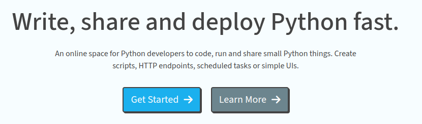
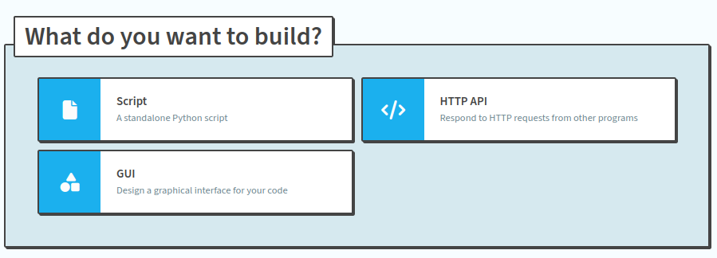
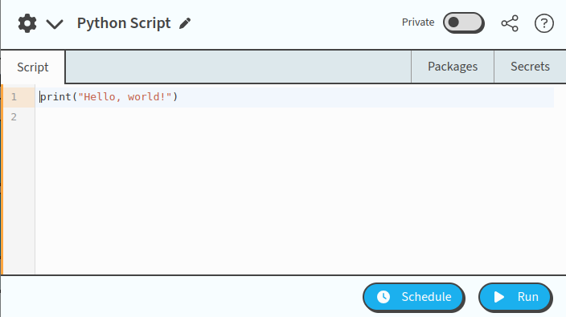
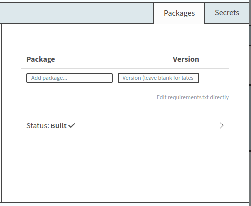
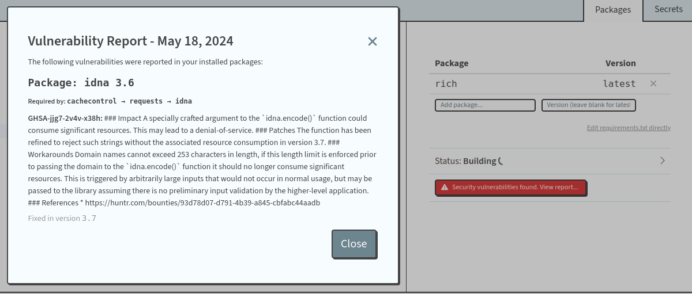
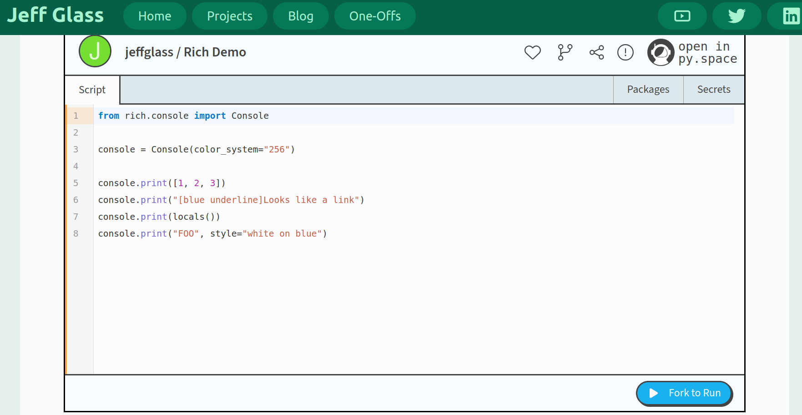
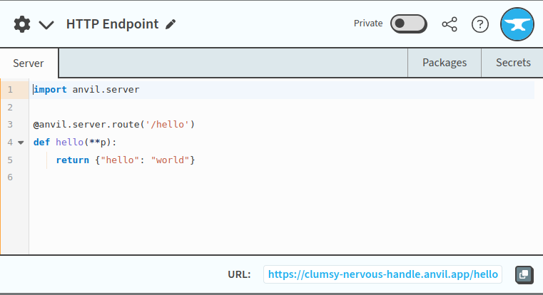
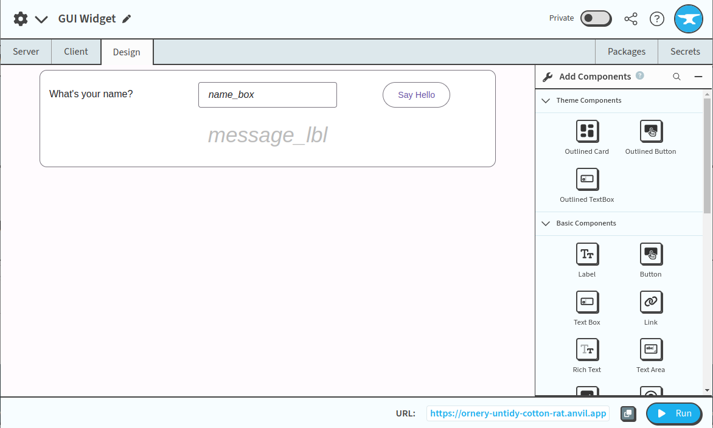

py.space
Published May 18, 2024
I had a lovely chat at on the floor at PyCon US with Ian Davies at Anvil, and specifically their newly launch py.space product. In short - it's a stripped down/streamlined version of Anvil that's being offered free to users to write online Python applications.
This is going to be just my lab notebook as a stumble through the product for 45 minutes before the next talks. Ian demo'd a bunch of their features to embed Python inside webpages, and as you can imagine, that's something I value! So let's see how it works in the wild
This isn't an ad, and I hope it doesn't come off as one. I'm just flush with PyCon exciting and looking to try things out. So many of us have identified both web and Python as the most popular platforms of the future, and I'm always game to try out another one.
Getting Started
A welcome page with a 'get started' button is always welcome:
On the login page, py.space describes itself as "An online space for writing, running and deploying Python scripts and APIs." The API's note is curious, and not sometime I think I've seen made available in other web-python-IDE's of this type.
On registering via GitHub, you're asked to choose a username. I'll be @JeffGlass, I suppose.
The first thing that pops up is a section asking "What do you Want to Build?", and offers Script, API, and GUI as options. There's also some featured examples.
Scripts
Let's try making a Script. Clicking that button brings up a pop-up code editor - looks like it's CodeMirror under the hood, which PyScript also loves. The rest of the user interface is quite minimal - Run and Schedule buttons, packages and secrets tabs, a private/public togger, sharing, settings, and help.
Let's try running the provided print("Hello, world!") code:
After taking 8-10 seconds with the run button saying "Launching", we see the output in a new pane at the bottom of the editor. A second execution took about a quarter of a second - so something special must be initializing the first time you run a project.
Let's try importing some packages. I know very little about Anvil and it's packaging model, so let's see what we can learn.
The packages pane has fields for package and version, or edit requirements.txt directly, which is an interesting option. I wonder if can point to dev packages on test.pypi.org? Typing in my favorite testing packages, rich, Anvil brings up a list of versions which seems up to date - so either it's really querying PyPI or its internal mirroring/compatibility is handling it well. Let's use the latest version.
It took about 45 seconds of "Building" before the installation process was complete - and in the middle of it, an interesting security warning popped up. Not sure if that's something generated on the Anvil side or from PyPI or what, but it's an interesting touch.
The code does indeed run! Looks like there's not support for terminal formmatting commands, but I that's very reasonable - something like a fully xterm.js is a bit heavy for this application. It does seem like the packages pane visually bleeds into the input pane - I've pinged the py.space forum about that, assuming its an ok place to report bugs.
One of the things Ian showed off as we were chatting this morning is the embedding feature... so let's try that out! Here's the code above embedded in my site:
I'm hoping that will appear for most people, but in case it doesn't (or as a historical record in case it changes later), here's what I see:
Ah, so what appears is the full code snippet, with a similar nice UI and such. The action is Fork to Run, which is interesting... so there's not a way for viewers of this block to actually run this code directly on my site - they'd need to fork it to their own (free) Anvil account in order to run it. This takes me back to a lot of the conversations that were had around PyScript.com (PSDC) - I'm not a part of that team, but naturally I know a bunch of the players. Where PSDC offers an option for any user to run your code and then fork it if they want, in this context forking is required. Not that either is better or worse, just different models of what code sharing means.
API
Let's go back to the start page and try building an API
We get a very similar editor, this time pre-populated with what I assume is boilerplate Anvil server code. I also see there's a URL at the bottom: https://clumsy-nervous-handle.anvil.app/hello, which looks like an auto-generated prefix. Just hitting that URL in my browser at this point does give me a {"hello":"world"} response - so they API is live from the time of creation! That's pretty slick.
Let's try adding another endpoint that doubles the number we feed it. It's not obvious from the py.space docs how we do this, but my understanding from Ian is that all of these are full Anvil apps under the hood, so let's see if the Anvil Docs answer that question. And yes! Not too complicated:
Now, hitting https://clumsy-nervous-handle.anvil.app/double/10 gives me back {"result":20} as desired. Instant API online... very very cool.
GUI?
The GUI editor looks very exciting... and from Ian's demo, has more features than I can explored before the next open space at the con. So that'll have to wait till another time.
Here ends the stream of consciousness. Hope all are having a great pycon!